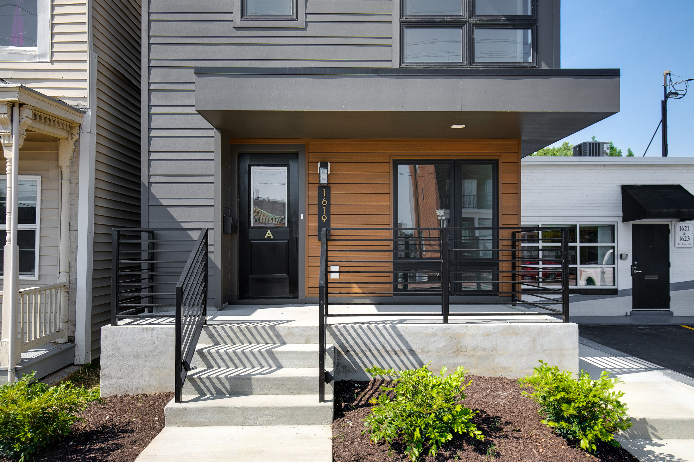
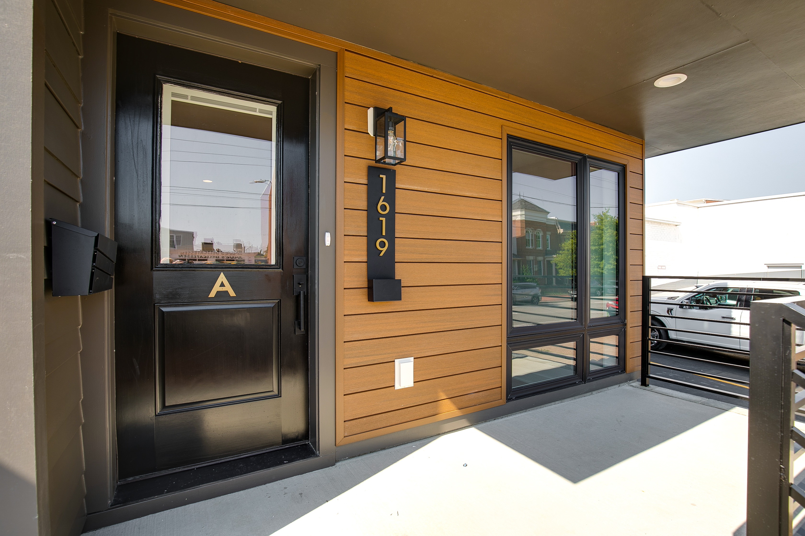
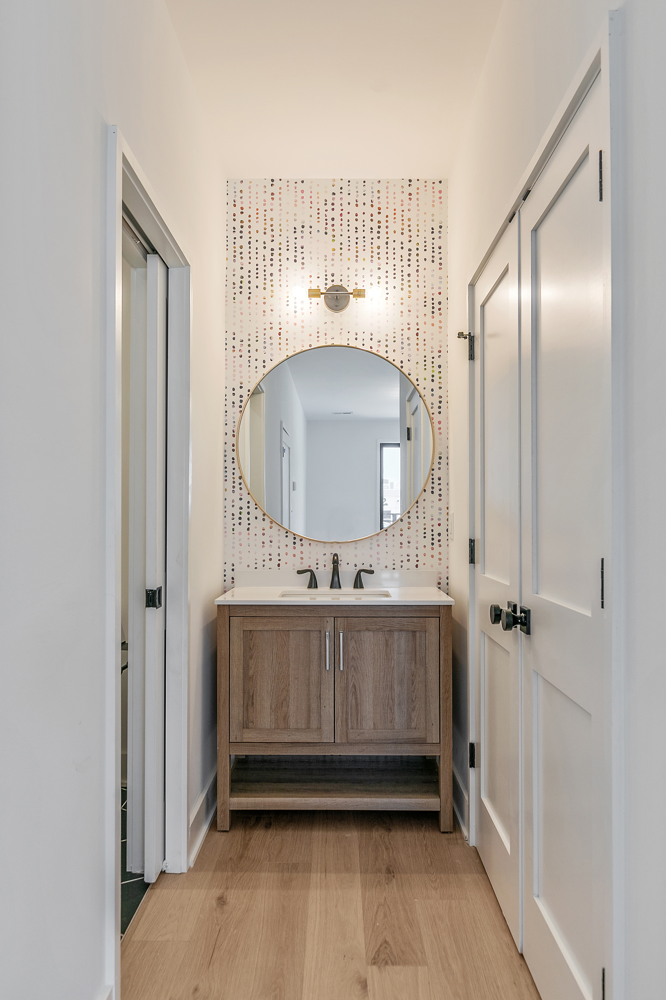
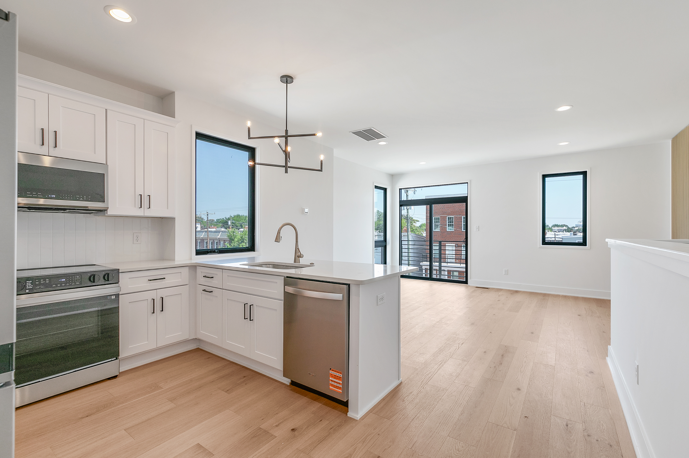
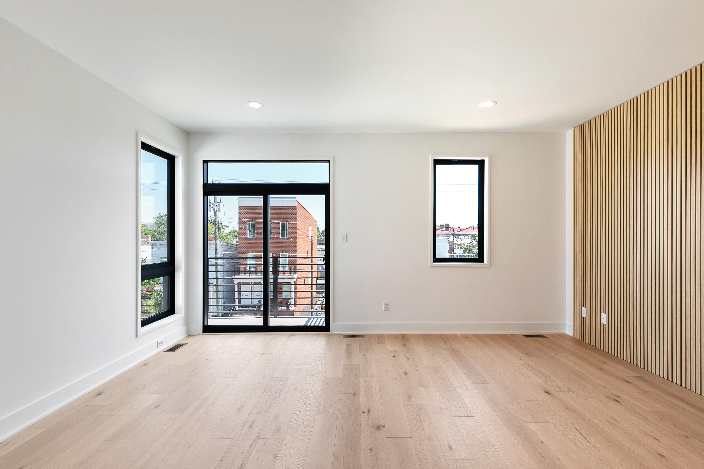
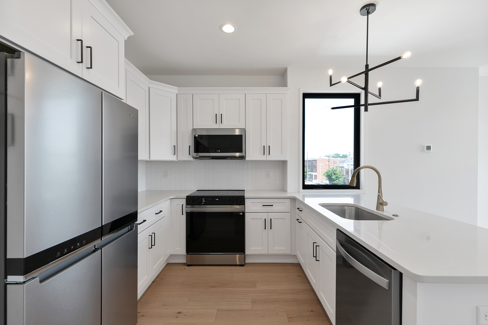
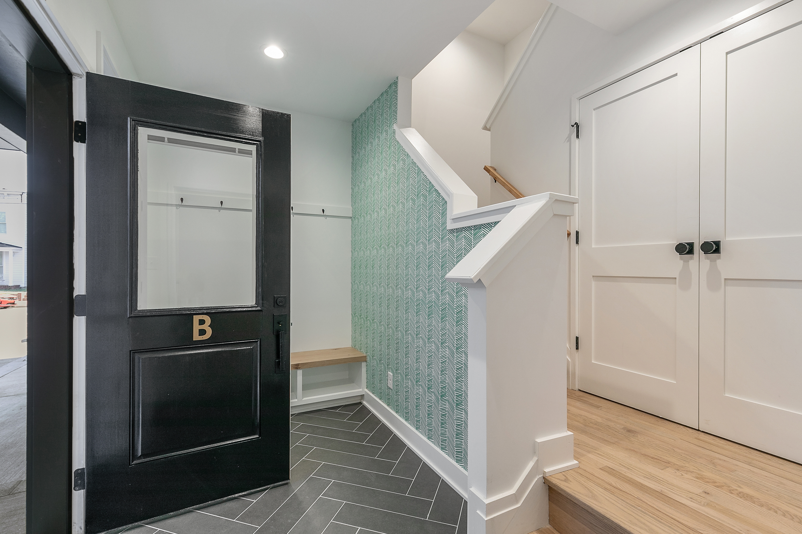
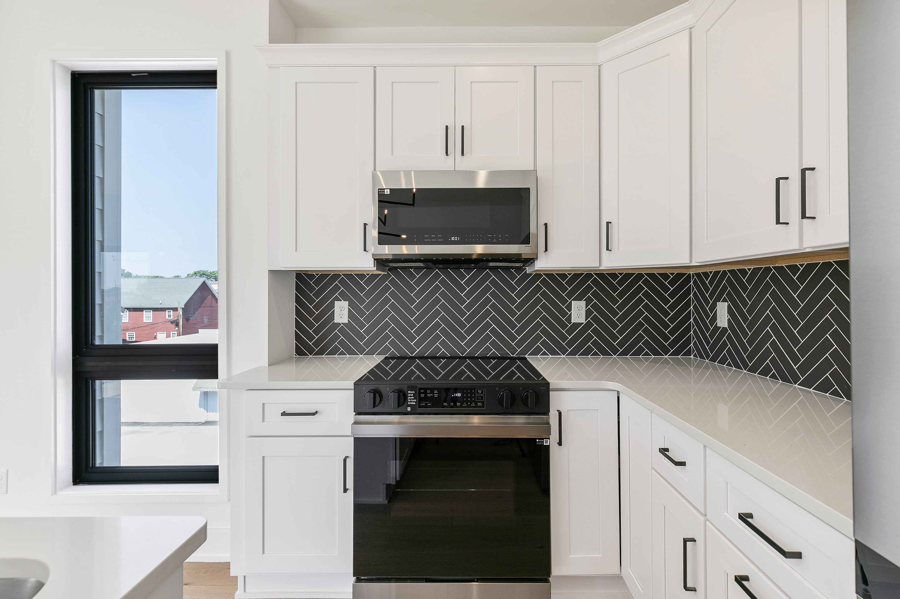
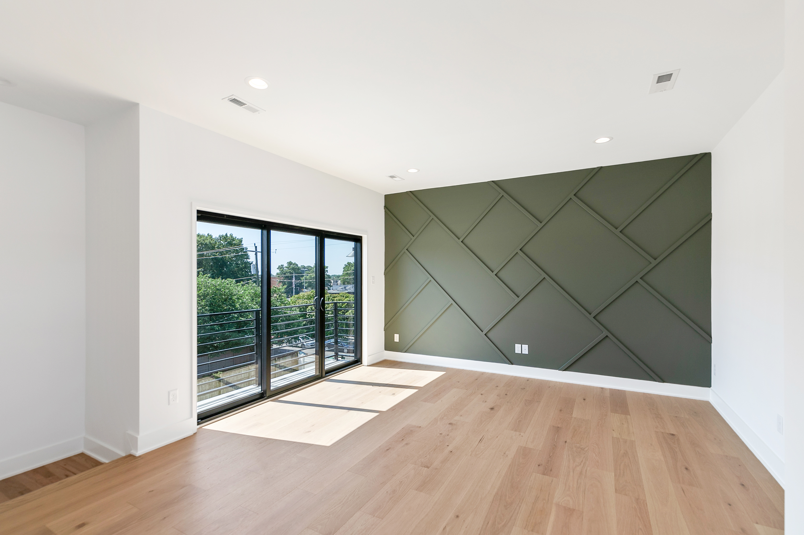
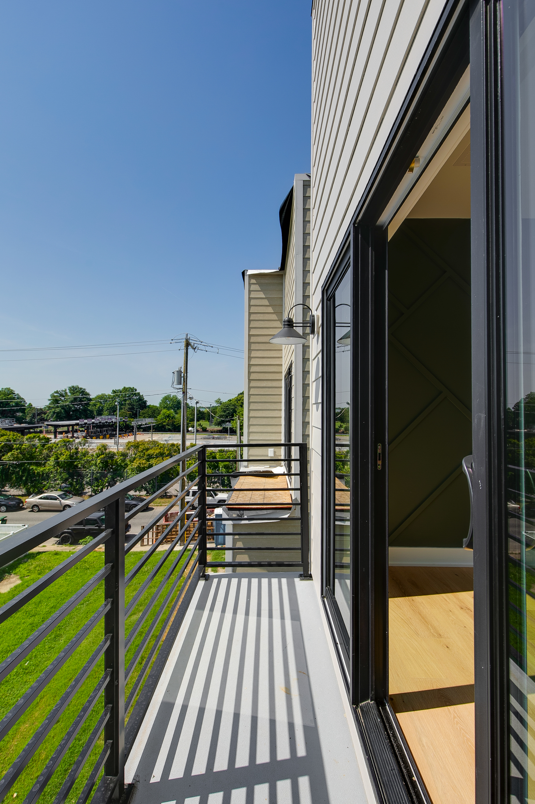

VCU · RICHMOND, VIRGINIA
Urban
Row.
City living with a view.
THE RESIDENCES
Three stories.
Richmond at your door.
Urban Row brings contemporary city living close to VCU, pairing three-story townhome design with views toward downtown Richmond. Each residence offers three bedrooms and two bathrooms in a setting connected to the energy of the city.
CITY LIVING
Designed for
an urban rhythm.
A vertical floor plan makes the most of city living, creating distinct spaces across three levels while keeping residents connected to VCU and downtown Richmond.
THE PROJECT
Inside
Urban Row.










THE EXPERIENCE
Close to campus.
Connected to Richmond.
Three bedrooms and two bathrooms provide room to live comfortably across three stories, with a contemporary architectural character suited to its city setting.
Views toward downtown Richmond reinforce the project's connection to the city and give Urban Row a distinctly Richmond perspective.
RICHMOND, VIRGINIA
City living,
elevated.
Urban Row puts residents near VCU and within easy reach of downtown Richmond, combining a connected location with the privacy and space of a townhome.
START A CONVERSATION →